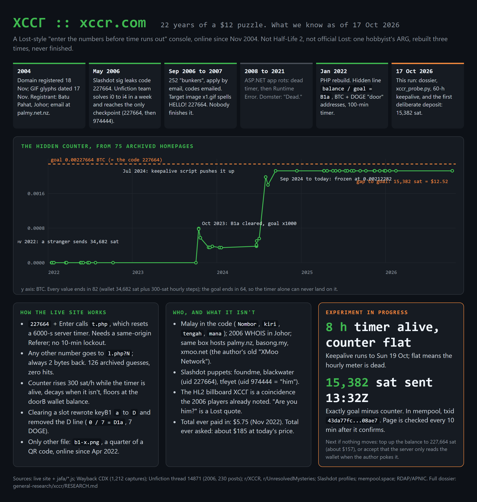
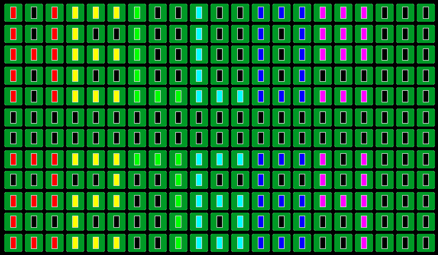
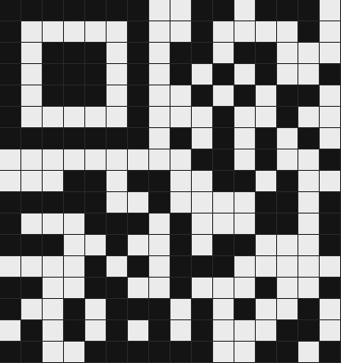

TL;DR xccr.com is a cryptic "enter the numbers before time runs out" console that has been online since November 2004. For two decades people have called it an unsolved Half-Life 2 ARG. It is neither unsolved nor Half-Life: it is one hobbyist's Lost-inspired puzzle, rebuilt three times and quietly abandoned. This repo is the first full teardown — mechanics, authorship, a reconstructed state model, a live experiment (we put money in to test a hypothesis), and all the raw data so you can check every claim yourself.

A black terminal with a green >: prompt. Type the number 227664 and press Enter; a
server-side 100-minute countdown appears. Select the page text and a hidden line shows
0.00212282 / 0.00227664 = B1b. The HTML <head> carries a Bitcoin address, a Dogecoin
address, and four "key" alphabet rows. That is the entire modern site. Everything else —
the Cyrillic title ХССГ, the Half-Life billboard rumor, the "ARE YOU HIM?" message — is
either backstory or coincidence. The sections below separate the two.
ХССГ, and that is the whole basis for the
rumor. HL2 shipped 16 Nov 2004; the domain was registered 18 Nov 2004; the site's GIFs are
dated 17 Nov 2004. The 2006 solvers already noticed the billboard and dismissed it. The
name likely came from the game; nothing points the other way.No name, but the cluster is unambiguous from public records:
xccr@palmy.net.nz, nameservers ns3/ns4.kiwihosting.net.nz.Nombor (number), kiri/tengah (left/middle, in the old RSS
feed), mana (where). The script folder is named jafa/ — NZ slang for an Aucklander.foundme (bio "Do you readme.txt?", sig
"Please stop entering code 2,2,7,6,6,4"), blackwater (user id 227664), and tfeyet
(user id 974444, revealed in-game as "him").Read together: a Malaysian-Chinese hobbyist developer from Batu Pahat, living in New Zealand, who has paid for one small VPS to keep this running for 22 years.
Enter 227664 to reset a 99-minute timer, bump a decimal counter, and sometimes receive
1–4 keys (N/S/E/W) to move on a hidden 10×10 room grid. State was partitioned by IP block
("your designated server" in readme.txt). A week-long puzzle chain (i0–i4) led, via
screenshots interleaved at 5-pixel intervals and column-shift steganography, to the message
"HE IS THE CODE ON SLASHDOT" and ultimately to Slashdot user tfeyet (uid 974444). The
Unfiction team reached the checkpoint by entering 227664 then 974444 on 25 May 2006.
The puppet-master never contacted the winners, and the game stalled. The full 230-post thread
is in evidence/unfiction_thread_2006.txt.
The homepage became a 21×12 grid of 252 "bunkers" you applied for by email; a code was
emailed and had to be entered within 24 hours. The target image x1.gif (below) spells
"HELLO!" then "227664" in a 3×5 pixel font, one color per glyph — decoded here for the
first time. The community never reconstructed it. By 2008 the ASP.NET app was dead; by
2016–2021 it threw a runtime error.

A from-scratch PHP rebuild, same GIF assets, far simpler. Enter 227664 → GET t.php resets
a 6000-second server timer. Any other number → GET l.php?<n>, which always returns two bytes.
The hidden line and the <head> keys are the whole puzzle surface. This is the live site, and
the rest of this document is about reverse-engineering it.
We pulled every distinct archived homepage (75 of them) and extracted the counter at each
point — the script is xccr_probe.py wayback, the series is
data/wayback_series.json:
| date | hidden line | keyB1 |
|---|---|---|
| 2022-01 → 2023-10 | 0.00000000 / 0.00000227 = B1a (+ 0 / 7 = D1a) |
abcdefghijklm |
| 2023-10-15 | 0.00079082 / 0.00227664 = B1b |
Dbcdefghijklm |
| 2023-10 → 2024-01 | decays to 0.00034682, sits there |
|
| 2024-06 → 07 | climbs to 0.00197882 (someone's keepalive script) |
|
| 2024-09-12 → now | frozen at 0.00212282 |
Three things fall out:
…82 = the wallet's 34,682 sat plus 300-sat steps. The
goal ends in …64. The timer alone can never land on the goal — a deposit is
structurally required. This had never been computed.data/chain.jsonl).The cleanest way to tell "intended deposit" from "dead cron" apart was to make the deposit and
watch. On 2026-10-17 we sent exactly 15,382 sat (≈ $12.50, the gap to the goal) to the
doorB address 1G9rG47hF8ckTT6icgHFV3qWBDPjkj4wME
(tx 43da77fc…,
confirmed in block 971869). Then we held the timer alive for 24 hours and snapshotted the page
every 10 minutes (data/state.jsonl, data/trigger.jsonl).
Result: no change. And the Wayback series explains why — it settles the counter model:
0.00000000. So the counter is not the live balance.Conclusion: the wallet is read once, at an author-triggered slot transition — not live. Our deposit can only matter if the author ever starts a new slot, at which point the new balance (50,064 sat) becomes the next floor. There is no player-side action that advances the current slot. The $12 bought a clean negative result, which is the point of an experiment.
The four keyB* rows concatenate into a 52-character buffer over a…z A…Z. In 2022 it was
the identity alphabet. Solving B1a overwrote position 1: a → D. So a slot name B1x =
door B, key-row 1, character position x (a=1, b=2, …), and each solved slot overwrites one
character. Read in order, the slots spell a word. We have the first letter: D. The
"wallet address" is doubling as the buffer being overwritten. This mechanic is undocumented
anywhere else.
b1-x.png): real, cropped on purpose, and unrecoverableThe only other asset is a partial QR. We did a clean module extraction (finder and timing
patterns intact → data/qr_grid.npy) and decoded the format-info block:
it is a valid format — ECC level H, mask pattern 6. A decorative fake would not carry
self-consistent format bits, so this is a genuine QR the author deliberately cropped.

It cannot be brute-reconstructed from this image, and not for lack of effort:
It becomes solvable only if another quadrant (b2-x, b1-y, …) is ever uploaded — the
assets watcher catches that — or a less-cropped capture surfaces.
favicon.ico "second layer" (a 2006 loose end): it is the stock Windows document icon.l.php guesses — the contact meta digits (12345678, …) and the era-1 Slashdot IDs
(974444, 975093, 897346) — all return the 2-byte baseline.Everything here is stdlib Python plus the public web. The monitor is one file,
xccr_probe.py:
python xccr_probe.py snapshot # fetch + parse the live page, diff vs last run
python xccr_probe.py wayback # rebuild the counter time series from the Internet Archive
python xccr_probe.py chain # BTC (doorB) + DOGE (doorD) balances, on-chain
python xccr_probe.py assets # hash every file in /images/ and /icons/, diff vs manifest
python xccr_probe.py dirs # probe plausible sibling paths
python xccr_probe.py trigger --mode referer # measure how t.php resets the timer
python xccr_probe.py keepalive --every 30 --hours 60 # hold the timer alive, watch for change
python xccr_probe.py lphp --list candidates.txt # try structured code guesses on l.php
It keeps all state in data/ as append-only JSONL, so every run is a diff against the last.
t.php only resets the timer with a same-origin Referer header; the probe handles that.
Note on ethics / scope. This repo only ever makes ordinary HTTP GETs to a public site and reads public blockchain + Internet Archive data. It does not attempt the server's admin panel, mail, or FTP, and it does not brute-force credentials. The one real-world action was a single small on-chain donation to a wallet the site itself advertises, made to test a documented hypothesis.
| path | what |
|---|---|
FINDINGS.md |
the dense working dossier (everything, with sources) |
xccr_probe.py |
the monitor/analysis tool |
data/ |
JSONL state logs, the counter time series, the QR module grid |
evidence/ |
contact sheets, the decoded x1.gif, the QR render, the infographic |
evidence/unfiction_thread_2006.txt |
the full 2006 Unfiction thread (230 posts) |
evidence/wayback_homepages/ |
90 archived homepage captures, 2008–2026 |
Live site + jafa/*.js; Internet Archive CDX (1,212 distinct captures); the restored Unfiction
thread [XCCR] Trailhead (2006); r/XCCR, r/UnresolvedMysteries, r/ARG; Slashdot profiles;
mempool.space; RDAP (Verisign) and APNIC. The fan wiki at craftworks.top/xccr was a useful
starting point; where it is wrong (the QR upload date, "offline 2016–2022," the counter
behavior), FINDINGS.md says so.
Findings and text: CC BY 4.0. Code: MIT. Do what you like; a link back is appreciated.